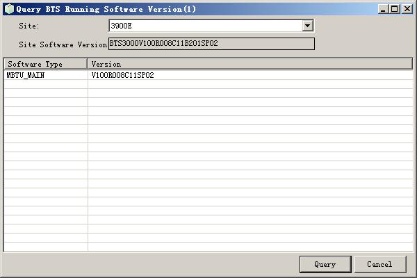

This describes how to query the software version of a BTS, software type, and software version of a board. When you maintain the BTS through the LMT, you can get the software version of the BTS by querying that of BTS boards.
Prerequisites
- The LMT runs normally.
- The communication between the LMT and the BSC is normal.
- The communication between the BSC and the BTS is normal.
Context
To query the BTS software of different version, save the BTS software in the version folder in the path \BSC6000\btsswm\.
Procedure
- Through GUI
- Choose .
- Set a Site, and then click Query. The results are displayed, as shown in Figure 1.
Figure 1 Querying the BTS software version

- Through MML
- You can run the following commands on the LMT to query the BTS software version.
- Run the DSP BTSVER command to query the running version of the BTS software.
- Run the LST BTSSWBYVER command to query the BTS software by version.
Copyright © Huawei Technologies Co., Ltd.